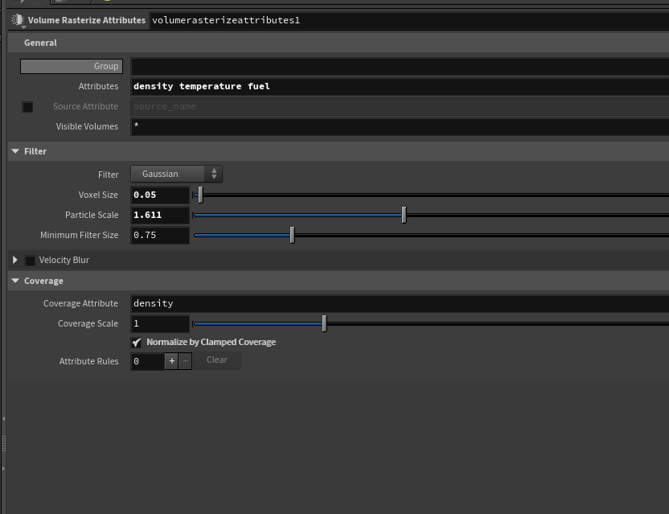
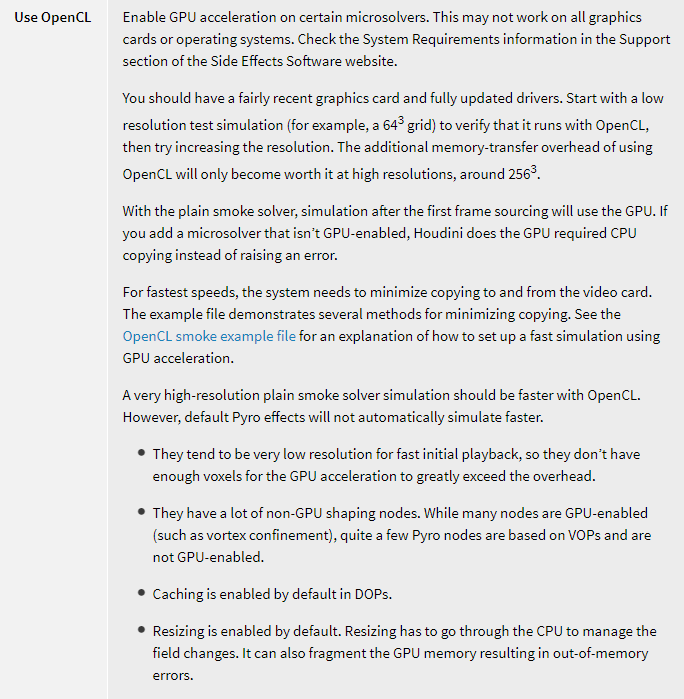
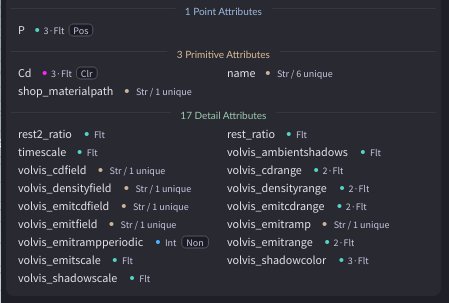
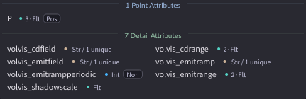

← 部落格 × Harbour
Bomin Kim（特效）


第 7 週
團隊成員
2 月 20 日
Bomin Kim（特效）
Caleb Stovall（3D／2D）
Mojie Tang（特效）
Sydney Relkin（合成）
Yiqi Zheng（特效）
SCAD × HARBOR － 第 7 週
大家好，這是我 SCAD × Harbor 部落格的第七週！
導師回饋：
Vi：
-
泡泡要更透明（現在看起來像空氣泡泡）：參考 Molly 的燈光
-
鏡頭 2／3：要能看出一點端倪
-
鏡頭 1：背景失焦但不要那麼暗，火焰要有更多細節
-
鏡頭 6：燈光太平，盒子上要有更多光線變化
Hailey：
- 鏡頭 1：調亮，加上暗角
- 鏡頭 4：接近結尾時放慢
- 鏡頭 6：煙霧感覺只有一層，很平
Molly：
-
看影片結尾（參考），重新檢視你的材質
-
鏡頭 4：向下移動，讓人有被往下拉的感覺
-
鏡頭 1：稍微拉遠一點，留更多空間
鏡頭 2 和 3 我加入了煙霧和灰塵，但還需要解決鍋子和煙霧之間的遮擋問題。以下是最終算圖版本：
問題出在把 USD 檔存到硬碟時，會因為記憶體不足而當機。為了解決這點，我自訂了設定，降低 voxel 大小與密度來優化記憶體用量；也刪除了一些屬性讓檔案更輕，並在 Pyro Solver 中勾選 16-bit 選項。

使用 OpenCL 提升模擬速度。

Attribute Delete：
因為我的煙霧模擬只是環境中漂浮的煙，所以可以放心刪除與火焰、燃燒和額外計算相關的屬性，以優化效能。
之前：
之後：


刪除這些多餘的屬性後，電腦的效能提升了。
之前：
之後：